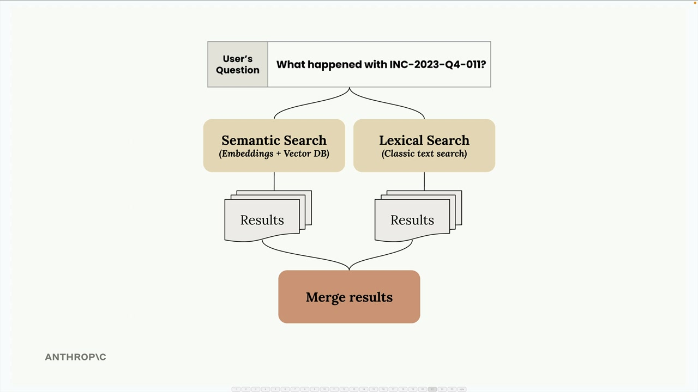
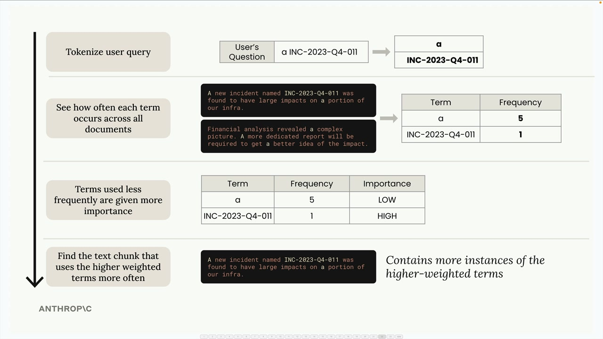
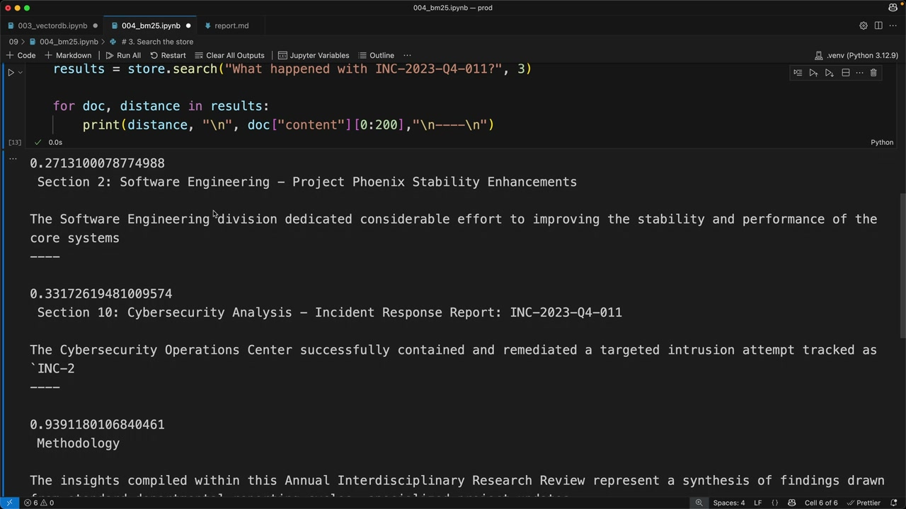

Лексический поиск BM25
Чему научитесь
Видео 10:00 и текст урока
К концу урока вы сможете:
- объяснить, где семантический поиск ошибается;
- описать четыре шага алгоритма BM25;
- построить индекс BM25 и искать по нему.
Видео и текст урока.
Смотреть урок на Skilljar BM25 lexical search · 10:00Строя конвейеры RAG, вы быстро обнаружите, что один семантический поиск не всегда даёт лучшие результаты. Иногда нужны точные совпадения терминов, которые семантический поиск может пропустить. Решение — объединить семантический поиск с лексическим при помощи метода BM25.
Проблема одного семантического поиска
Допустим, вы ищете в документе конкретный идентификатор инцидента, например «INC-2023-Q4-011». Семантический поиск хорошо понимает контекст и смысл, но может вернуть разделы, связанные по смыслу, в которых нужного термина на самом деле нет.
В примере семантический поиск вернул раздел о кибербезопасности (в нём ID инцидента есть), но вернул и раздел финансового анализа, где об инциденте ни слова. Так происходит, потому что семантический поиск ориентируется на смысловую близость, а не на точное совпадение терминов.
Гибридный поиск
Решение — запускать семантический и лексический поиск параллельно и объединять результаты. Так вы получаете лучшее от обоих:

- семантический поиск находит связанное по смыслу содержимое с помощью эмбеддингов;
- лексический поиск находит точные совпадения терминов классическим текстовым поиском;
- объединённые результаты сочетают оба подхода и точнее каждого по отдельности.
Как работает BM25
BM25 (Best Match 25) — популярный алгоритм лексического поиска в системах RAG. Вот как он обрабатывает поисковый запрос:

Шаг 1. Разбить запрос на токены. Вопрос пользователя делится на отдельные термины. Например, «a INC-2023-Q4-011» превращается в ["a", "INC-2023-Q4-011"].
Шаг 2. Посчитать частоту терминов. Смотрим, как часто каждый термин встречается во всех документах. Частые слова вроде «a» могут встретиться 5 раз, а конкретные термины вроде «INC-2023-Q4-011» — всего один.
Шаг 3. Взвесить термины по важности. Чем реже встречается термин, тем выше его важность. Слово «a» получает низкую важность, потому что оно частое, а «INC-2023-Q4-011» — высокую, потому что редкое.
Шаг 4. Найти лучшие совпадения. Вернуть документы, в которых больше вхождений терминов с высоким весом.
Реализуем поиск BM25
Вот как настроить простую систему поиска BM25:
# 1. Chunk your text by sections
chunks = chunk_by_section(text)
# 2. Create a BM25 store and add documents
store = BM25Index()
for chunk in chunks:
store.add_document({"content": chunk})
# 3. Search the store
results = store.search("What happened with INC-2023-Q4-011?", 3)
# Print results
for doc, distance in results:
print(distance, "\n", doc["content"][:200], "\n----\n")
Такой поиск даёт гораздо лучшие результаты, чем один семантический. Алгоритм BM25 ставит на первые места разделы, в которых действительно есть искомые термины, особенно редкие вроде ID инцидентов.

Теперь результаты правильно ставят вперёд разделы Software Engineering и Cybersecurity — в обоих есть искомый ID инцидента.
Почему это работает лучше
BM25 хорошо находит точные совпадения, потому что он:
- даёт больший вес редким, конкретным терминам;
- игнорирует частые слова, которые не помогают поиску;
- опирается на частоту терминов, а не на смысл;
- особенно хорош для технических терминов, идентификаторов и конкретных фраз.
Ключевая мысль: у двух методов поиска взаимодополняющие сильные стороны. Семантический поиск понимает контекст и смысл, а лексический гарантирует, что вы не пропустите точные совпадения терминов. Объединив их, вы получаете более надёжный поиск, который справляется и со смысловыми запросами, и с поиском конкретных значений.
Дальше вы узнаете, как объединить результаты обеих систем в единый гибридный поиск.
Дальше
Последний урок раздела объединяет векторный и BM25-индексы в один конвейер с ранжированием RRF.
Оригинал урока: BM25 lexical search.